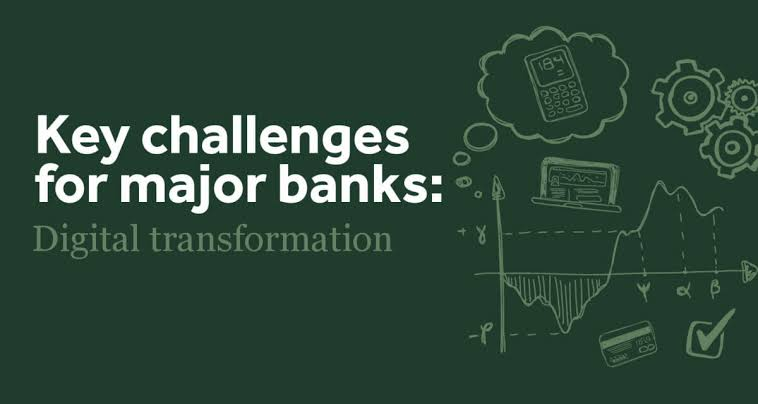
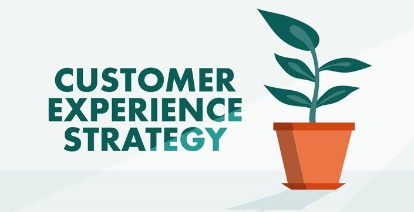

The relevance and importance of digital initiatives have shown that they are no longer just good to have, but rather have become critical for survival in emerging economies. The digital revolution is here, and it is changing how financial/ banking services are delivered. Every Financial service provider or bank today should be eager to evolve, using secure and compliant modern technologies to fundamentally re-imagine and re-think their businesses and operations, investing heavily in innovations that could cause real impact.
We are gradually moving into a new era of digital financial services, the evolution of the entire financial service landscape which will result in the emergence of next generation customer experiences: tailor-made, personalised, timely, intelligent services . And the only ones who will deliver differentiating customer service and experience, are those who are able to stay agile, and adapt quickly to rapidily changing demands and requirements.
Improving Financial Services Through Digital Transformation
Digital transformation within the financial space would require total re-designing, and complete re-thinking of entire existing operations. And it involves empowering internal employees with both technological tools, and better skill sets / mindset.
Digital transformation requires not just a change and improvement in an organisation's legacy technology, but an entire transformation of operations, culture and systems. It transforms: people (workforce culture & mode of operations),
systems (core banking functions and technological solutions) and operations (customer relationship and brand recognition).
Financial services today face a myriad of challenges that hinder complete digital transformation, and the delivery of smooth service to their customers.These challenges include both internal and external challenges. And while some of these challenges can sometimes be out of their control, there are still lots of effective measures that can be put in place to ensure gradual implementation of the needed transformation.

- Modernizing Legacy Systems: This requires the upgrading of I.T & technology infrastructure to improve efficiency, and cut down costs. It requires introducing more agile, unified technology and infrastructure to totally transform and improve the way they do business.
- Intelligent Fraud and Cybercrime Prevention: A lot of banks can agree that cyber risk is one the top threats in the financial service industry. The introduction of digital methods into operations has a potential to open up organisations to new cyber threats and other technology related risks, but with intelligent fraud detecting systems which are able to quickly detect anomalies and prevent these threats, organisations can mitigate these risks whilst benefiting from these agile digital methods.
- Cost Effective Regulation Compliance: This involves intelligent risk combating, using smarter and more effective approach to ensure that all operations related risks are properly monitored and controlled and there is strict adherence to compliance regulations.
- Enabling Frictionless Customer Experience: Removing friction from customer journey is one of the most important trends in retail banking, and this can be done through enhanced interaction between associates and customers by improving support with both internal and customer facing capabilities.
- Devising Open Banking Business Models: If banks and other financial service providers are to really serve customers at the point of all their needs, they would need to be able to expand their offerings as quickly as they can, and leveraging the open banking model is the way to go. This allows for easy integration of their products and capabilities into a much wider ecosystem.
Traditional Vs. Modern Digital Banking Business Model
Global digitization is transforming banking, and banking customers now seek more personal or tailored solutions and would happily choose alternatives to traditional banks.
Over 80% of bank customers prioritize online and mobile functionality and would gladly switch to providers that provide personalised services.
And financial service providers who can deliver on this, increase their net promoter score (NPS) significantly.
Banking In The New Digital Era
- Hyper personalised customer experience: unlike the "one size fits all" customer experience of traditional banking, the new banking will be able to deliver personalised customer experiences at scale with speed and agility.
- Customer centric business model: with traditional banking, products and channels are controlled by the bank, enforced by regulation. With the new banking we integrate new technologies with service offerings to meet customers needs and desires with flexibility, and can even go as far as serving their unknown needs.
- Cost effective regulatory compliance at scale: with traditional banking, we had regulatory compliance through additional workforce. with modern banking, we'll achieve compliance intelligently and more effectively while minimizing cost and impact
- Intelligent predictive security and fraud management: With old traditional banking we had fragmented, reactive, fraud and security practices. With the modern banking we'll leverage predictive technology to combat increasingly sophisticated fraud and criminal activities
- Modern architecture: The days of siloed operations, rigid systems with inaccessible data should be gone. Allowing us embrace more agile, open architecture that leverages data with real-time capabilities that enhance the customer experience, enabling an API driven ecosystem that allow for new revenue opportunities
Customer Experience (CX) As A Competitive Differentiator
If service providers are to competitively win customers, then they will have to deliver a differentiating customer experience to not just win customers over, but to effectively retain them and even go as far as turning them into loyal advocates for their brand.
Personalised services is the answer to this. Services personal to customers: needs, wants, stage of life, and their environment. And this can only be done by leveraging integrated customer management and advanced analytical capabilities to enable more personalised interactions, offering relevant products and services, and delivering value at every customer touch point. Which will in turn increase customer loyalty and deposits, empowering a more customer-centric client experience.
Deepening Customer Engagement
To better serve customers, strategies to deliver streamlined, personal customer experiences will have to be put in place, leveraging every interaction at every customer touch point, as an opportunity to delight the customer. Customizing support to customers' needs in real time and allowing for easy feedback and improvement in the future.
Customer touch points are points of interaction between brands, businesses, and its customers. It is a brand’s point of customer contact, from start to finish. This includes all its channels from the branch, mobile platforms, social media, contact centers, ATMs etc.
This enables customers to seamlessly engage with service providers whenever and from wherever they want, leveraging multiple channels of engagements and giving the provider a chance to understand customers better by monitoring every interaction. Creating a holistic customer view and personalizing services with rich interaction history, transforming rich customer data into actionable insights (customer intelligence), to serve them better through better targeted offers, services, and tailored engagements. Increasing customer connection and loyalty
Creating Value at Every Touch Point
Financial service providers will have to properly position themselves to serve customers better, creating value at every touch point through the entire customer lifecycle (customer attraction, acquisition, and retention). Making sure that most customers become valuable customers who would develop high loyalty and become brand advocates, which in turn maximizes the lifetime value of the customer. Growing share of wallet through cross-selling of relevant products or services to existing customers to maximize “stickiness”.
-
This includes:
- Targeting the potential customers with consistent, personalised, relevant, and differentiated experiences.
- Driving conversion more effectively through channels that meets customers preference but still cost effective.
- Providing foundational elements needed for customer experience transformation journey, which includes alignment across: people, process, data, and technology.
- Delivering products and service experience that meets and surpasses the customer’s expectation.
Empowering Customer-centric Client Experience
- Personalised digital branch experience: empowering customers to choose their preferred channel of interactions with streamlined access to experts and service agents
- Remote and mobile advisors: these include personal financial assistants educating customers with financial guidance. Helping them visualize their financial future with emotional response in an immersive experience.
- Relevant marketing interactions: timely offerings of relevant products and services to customers. Offers based on customer's personal needs, and support based on their unique circumstances.
- Omni-channel support: same quality of service across all channels (ATMs, social media, branches).
- Intelligent self-service banking: empowering customers to carry out needed financial operations seamlessly, and use of analytics to anticipate customer needs and proactively detect and handle problems.
Building Better Digital Platforms
To achieve these desired states, there is a need to invest in the technology to fuel this transformative shift, and enable greater operational resiliency.
This involves empowering the key stakeholders through the use of technology to drive better experiences for all, because the transformation must positively impact both stakeholders (employees and customers).
1) Employees (Internal users): providing the needed tools required to make data driven decisions which drives efficiency and productivity.
2) Customers (external users): creating a resilient omni-channel, giving the customers multiple choices to choose what channel they want to be best served on as they interact with the bank
Some of this technology includes:
- Cloud Technology: an agile, flexible platform for innovating quickly and competing at scale.
- Artificial Intelligence (AI): allowing for automated interactions that are faster, safer and cheaper.
- Blockchain: a secure, decentralized and tamper proof shared ledger that enables for cheaper storage and transfer of funds.
- Advanced data analytics: leveraging big data and advanced analytics to predict what customers want, better understand risks and finding new ways to drive revenue while controlling costs.
- APIs: sharing data via APIs gives customers more services options to fit their individual needs.
All these have potential to result in:
- Intelligent customer self-service
- AI enabled personal advisory
- Intelligent omni-channel bots
- Augmented employees & robotic process automation
- Cognitive process automation / AI & ML enabled operations
- Intelligent compliance & risk management
- Smart analytics & reporting
The Future Of Financial Service (Banking)
The future of banking, will take an ecosystem approach, creating
unified platforms. Adding value by properly leveraging relationships, networks, and technology (big data, AI and open APIs). It will involve a lot more digital operations, with its retail branches providing more targeted offers, with customer centricity and FinTech partnerships.
It will run on a more efficient banking value chain model that involves : cultural transformation, experience transformation and business transformation.
-
The value chain includes all stages of the customer lifecycle which are:
- Identify & Target
- Acquire & Sell
- Onboard & Activate
- Monetize & Service
- Innovate & Retain
The Bank of the future will be a lot more agile and responsive to customers’ personal needs. Providing a single experience for customers through a unified interface, creating a seamless end-to-end journey to the desired customer outcome.
It is to transform from being merely traditional (providing services through sepa rate multiple channels ), to becoming more intelligent (able to seamlessly predict what's next for the customer), and then finally transition into becoming able to provide fully immersive experiences (frictionless consistent customer experiences)
Summary
Organizations who provide financial services need to figure out how to move quickly from strategic insights, to actual applied strategy. Empowering employees, engaging customers better, optimizing operations and transforming their products and services using technology as an enabler.
Six (6) Strategic Approach
- Access to Data: advanced information management systems for insight extraction.
- Empowering Employees: digitally assisted employees with efficiently distributed knowledge.
- Improving Client Experience: client personalization & omni-channel experience.
- Encouraging Digital Innovation: solid innovation culture.
- Modernized Environment: cloud native to enable innovation at larger scale.
- Embedded Trust: compliance, and secure delivery of service.